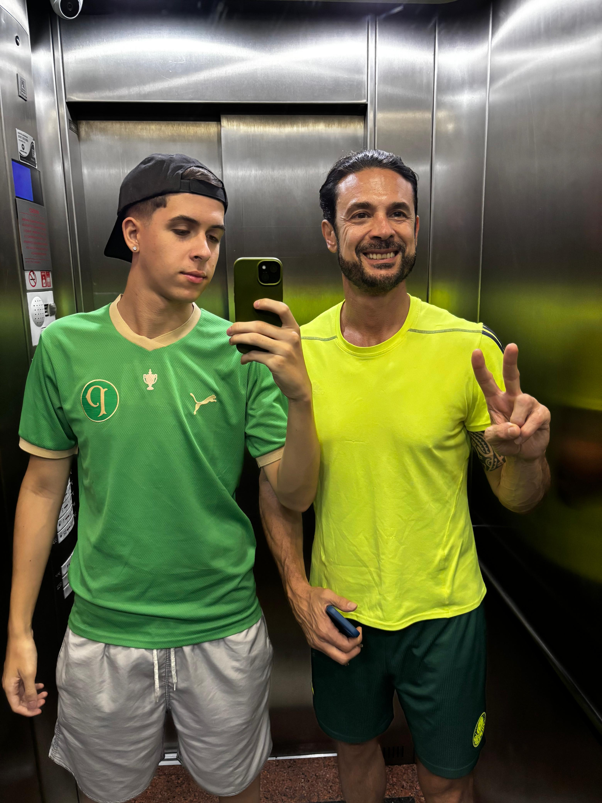

QUEM SOU EU?
Seja bem-vindo(a) ao meu espaço pessoal na web!
Meu nome é Enrico Assef, e estou animado
para compartilhar um pouco sobre quem eu sou e o que me move.
Atualmente, dedico-me ao universo da tecnologia como estudante de Análise e Desenvolvimento de
Sistemas pela SPTECH – São Paulo Tech School. Desde cedo, desenvolvi uma profunda paixão por
tudo que envolve o mundo digital, desde a lógica de programação até a criação de soluções
inovadoras que facilitam o dia a dia.
Aos 19 anos, concilio a dedicação aos estudos com os meus hobbies, que trazem o equilíbrio
perfeito à rotina. Sou um apaixonado torcedor do Palmeiras, o verdalho! Gosto de assistir aos
jogos, ir ao estádio e vibrar com todos os lances.
Pode parecer que código e campo são mundos separados, mas a verdade é que consegui conectar
essas duas grandes paixões.
Este site é a prova disso! Ele nasceu da minha vontade de unir
o
amor pela tecnologia, pela análise de dados e pelo desenvolvimento de sistemas com a minha
paixão pelo futebol e pelo time do coração.
Espero que você goste de navegar e descobrir como a paixão pode ser o motor para a inovação e a
criatividade!

QUEM ME MOTIVOU?
Tio Marcos, esta paixão que sinto pelo Palmeiras tem um endereço certo: o seu.
Desde quando eu era recém-nascido, você já estava lá, garantindo meus primeiros macacões e, mais
tarde, a mochila, o uniforme completo, o boné e a chuteira, tudo ostentando o nosso verde e
branco. Você não apenas me deu presentes, você me deu uma paixão. Foi com você que aprendi a
gostar, a amar e, acima de tudo, a torcer pelo Palmeiras de verdade.
Você é o responsável por me apresentar à nossa casa, me levando ao estádio pela primeira vez –
uma memória que guardo com o maior carinho até hoje daquele empate entre Palmeiras x Cruzeiro
por 1 x 1 com gol do zagueiro Manoel (Cruzeiro) e Lucas Barrios (Palmeiras). Não importa quanto
tempo passe, nossos encontros e conversas sempre, inevitavelmente, acabam no
Verdão. A emoção de nos reunirmos com a família para assistir aos jogos é um dos momentos mais
especiais e inesquecíveis.
Obrigado por tudo o que você fez para me transformar em palmeirense. Você me deu mais do que um
time, me deu uma herança, uma tradição e muitos momentos de alegria. Essa dedicação é para você!